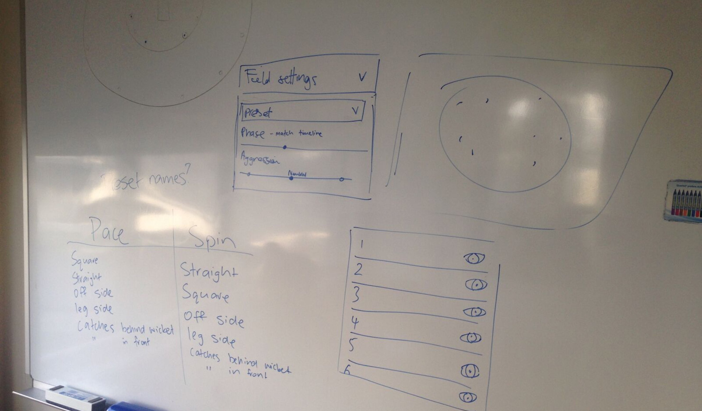
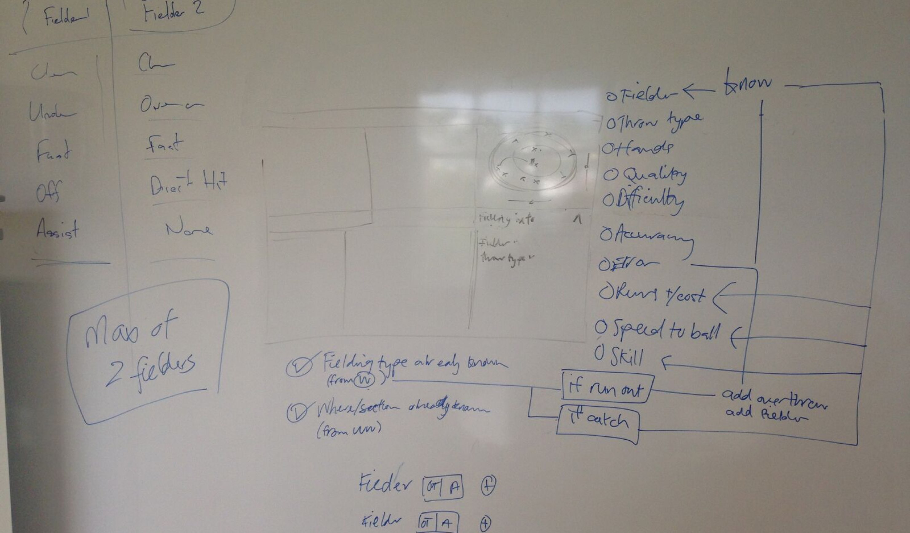
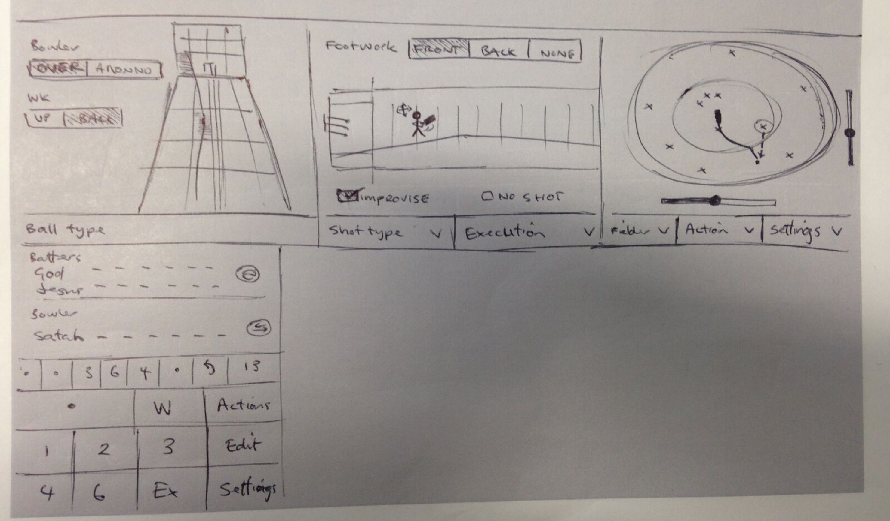
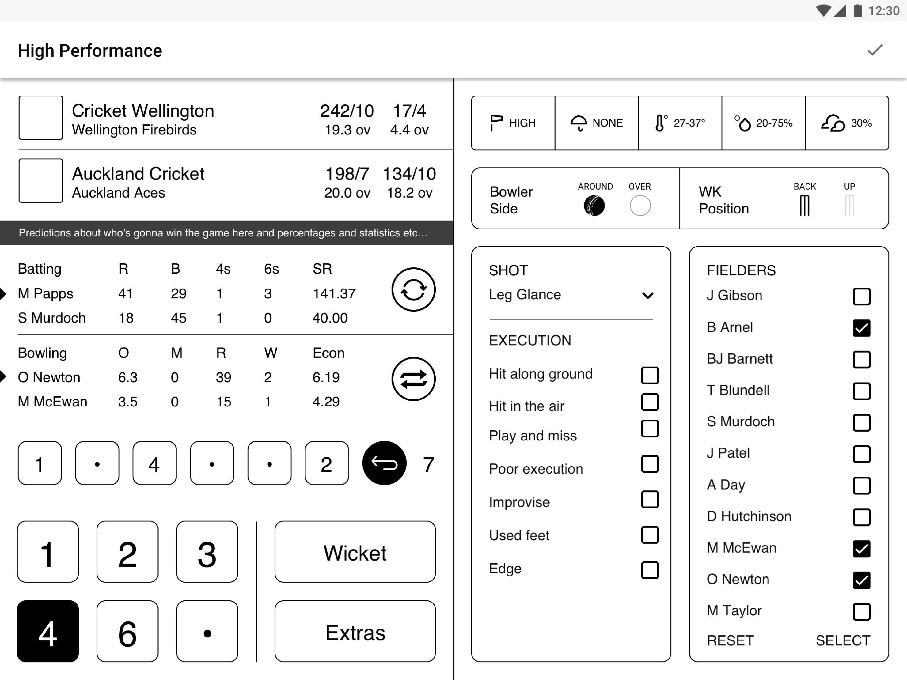
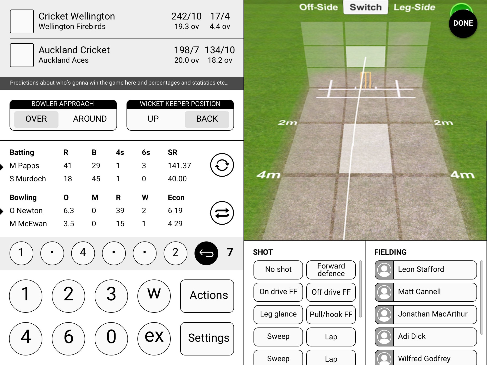

Projects > CricHQ
I was asked to help CricHQ to design, among other things, a tablet app that would be used to score cricket matches in real-time with the purpose of allowing sports betting vendors to more accurately assess spot gambling opportunities. It was decided to design for a tablet because there was no way all the information would be easily visible/available on a phone.
Working alongside professional cricketers Sophie Devine and Peter Younghusband, both of whom have represented New Zealand on the pitch, I was tasked with finding a way to download all their combined knowledge and representing it in an easy-to-use way – no small task, considering that cricket is one of the most complicated sports to score and measure.
Trying to figure out fielding settings.
More fielding complexity.
What made this project difficult is that the bowling, batting and fielding information needed to be captured between the time the batsman hits the ball, the play ends and the bowler prepares to bowl the next ball (and hopefully with time to spare).
Early sketch.
One of the failed wireframes.
Another one of the failed wireframes. This is getting sad.
After a lot of trial and error it all came together. The trick then was building an interactive prototype which could be tested against match footage in real-time.
© Andi Parker. All rights reserved.